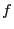
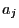

Next: GRBaddqconstr Up: Model Creation and Modification Previous: GRBaddgenconstrOr
| int | GRBaddgenconstrIndicator ( | GRBmodel | *model, |
| const char | *name, | ||
| int | binvar, | ||
| int | binval, | ||
| int | nvars, | ||
| int* | ind, | ||
| double* | val, | ||
| char | sense, | ||
| double | rhs ) |
Add a new general constraint of type GRB_GENCONSTR_INDICATOR to a model. Note that, due to our lazy update approach, the new constraint won't actually be added until you update the model (using GRBupdatemodel), optimize the model (using GRBoptimize), or write the model to disk (using GRBwrite).
An INDICATOR constraint
 states that if the binary
indicator variable
states that if the binary
indicator variable  is equal to
is equal to  , then the linear constraint
, then the linear constraint
 should hold.
On the other hand, if
should hold.
On the other hand, if  , the linear constraint may be violated.
The sense of the linear constraint can also be specified to be “
, the linear constraint may be violated.
The sense of the linear constraint can also be specified to be “ ” or “
” or “ ”.
”.
Note that the indicator variable  of a constraint will be forced
to be binary; independently of how it was created.
of a constraint will be forced
to be binary; independently of how it was created.
Arguments:
model: The model to which the new general constraint should be added.
name: Name for the new general constraint. This argument can be NULL, in which case the constraint is given a default name.
int binvar: The index of the binary indicator variable  .
.
int binval: The value  for the binary indicator variable that would
force the linear constraint to be satisfied ( or
or  ).
).
int nvars: The number  of non-zero coefficients in the linear constraint
triggered by the indicator.
of non-zero coefficients in the linear constraint
triggered by the indicator.
const int *ind: Indices for the variables  with non-zero values in
the linear constraint.
with non-zero values in
the linear constraint.
const double *val: Numerical values for non-zero values  in the linear constraint.
char sense: Sense for the linear constraint. Options are GRB_LESS_EQUAL, GRB_EQUAL, or GRB_GREATER_EQUAL.
double rhs: Right-hand-side value for the linear constraint.
Return value:
A non-zero return value indicates that a problem occurred while adding the general constraint. Refer to the Error Code table for a list of possible return values. Details on the error can be obtained by calling GRBgeterrormsg.
Example usage:
/* x7 = 1 -> x1 + 2 x3 + x4 = 1 */
int ind[] = {1, 3, 4};
double val[] = {1.0, 2.0, 1.0};
error = GRBaddgenconstrIndicator(model, NULL, 7, 1,
3, ind, val, GRB_EQUAL, 1.0);